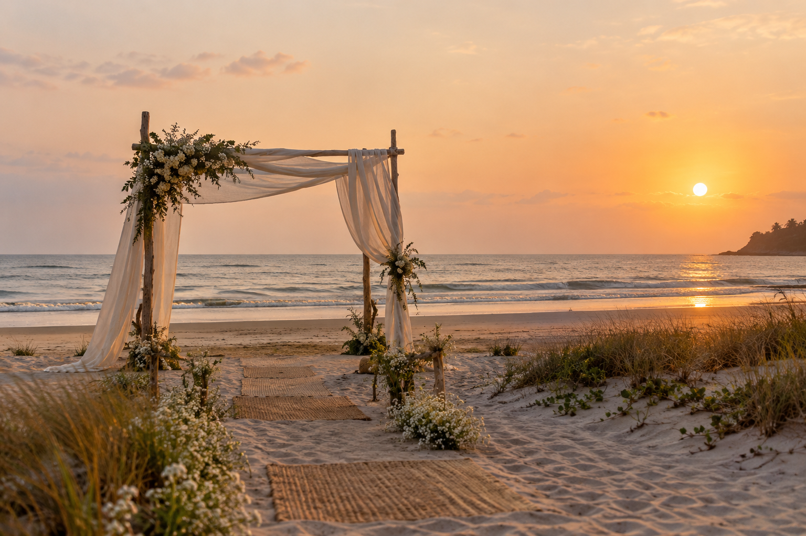
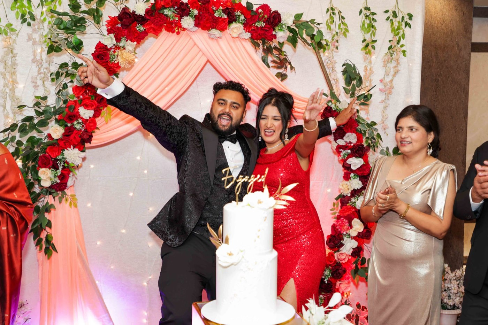

Pre-wedding shoots, with Goa as your set.
You bring the two of you. We plan the places, the timing, the outfits and the route between them.
Choose your Goa
Which Goa feels like you?

Morjim · Ashwem North Goa
Barefoot on an empty beach at sunset.
- Best time
- Last 45 minutes before sunset
- Months
- October to May
- Wear
- Flowing fabrics, ivory, pastels, no heels
- Pairs with
- A clifftop stop at Vagator
What we plan for you
You don't need to know Goa. We do.
Send us your dates and a few photos you love. You'll get a shoot plan with places, times, looks and travel, on one page.
- Two or three locations
- Permissions where needed
- Sunrise or sunset timing
- Shoot flow and route
- Outfit and look changes
- Hair and make-up artist
- Car between locations
- Props and florals
- Drone where allowed
- Teaser film for socials
A typical shoot day in December
One afternoon, two looks, three places.
Times move with the season. We send yours with your plan.
- Hair and make-up at your hotel
- Look one: Fontainhas lanes, Panjim
- Drive north, change in the car
- Look two: Chapora cliffs, drone
- Golden hour, Vagator shoreline
- Sunset. Wrap by blue hour.


Pre-wedding packages.
Half day
Golden hour
On request
One or two nearby locations, one look, 40+ edited photos, planning included.
Full day
Two Goas
On request
North and South or beach and heritage, two looks, 80+ photos, 60-second teaser.
Full day + film
The feature
On request
Three locations, drone, 3-minute film, make-up and transport arranged.
Plan your pre-wedding →Prices on request. Message us on WhatsApp with your dates for a quote.